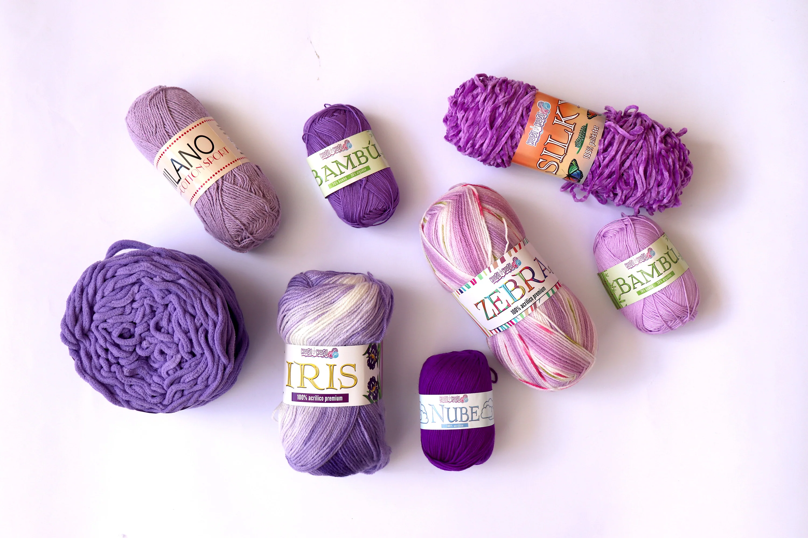
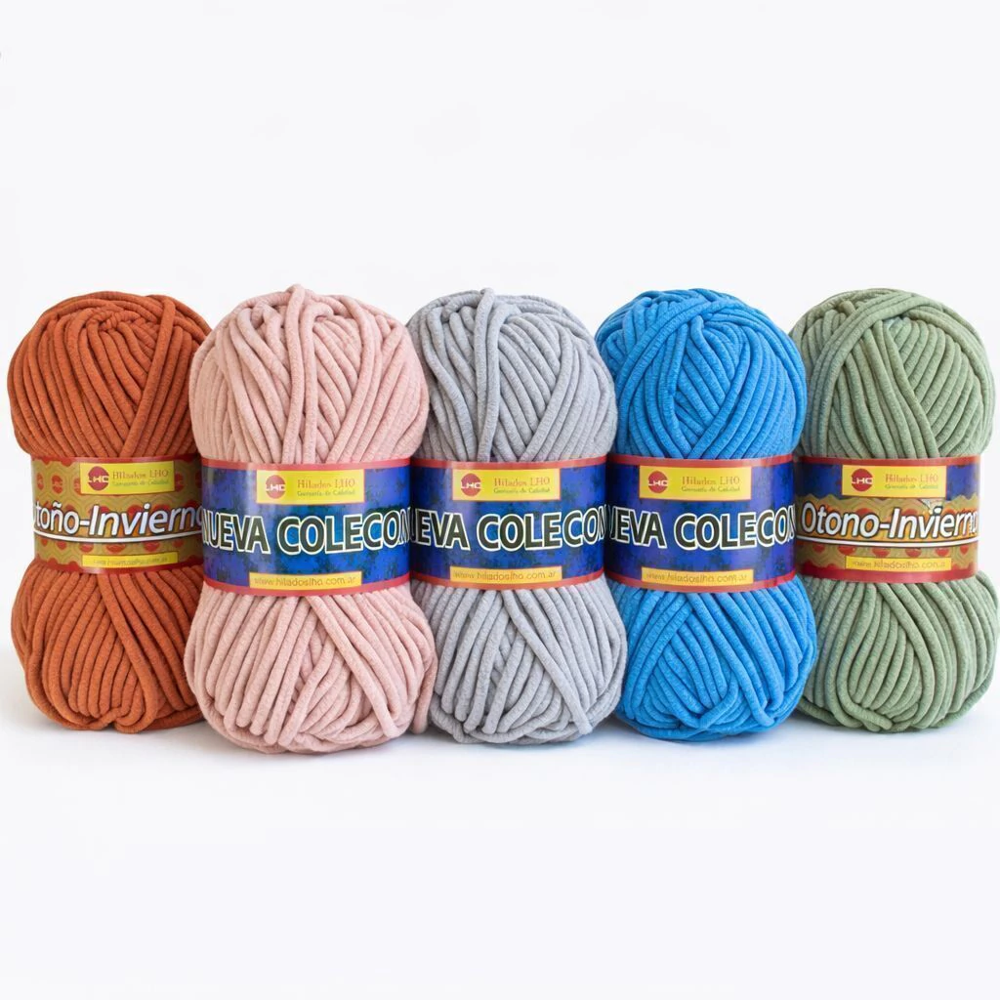
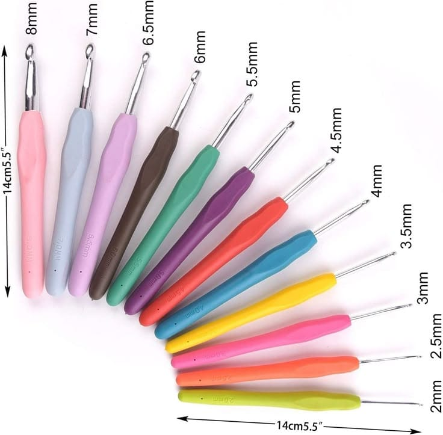
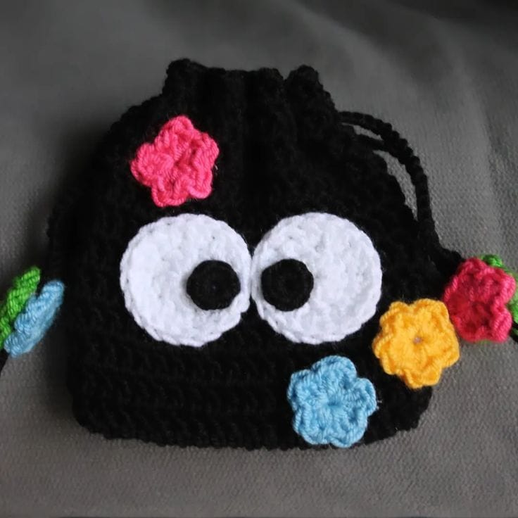
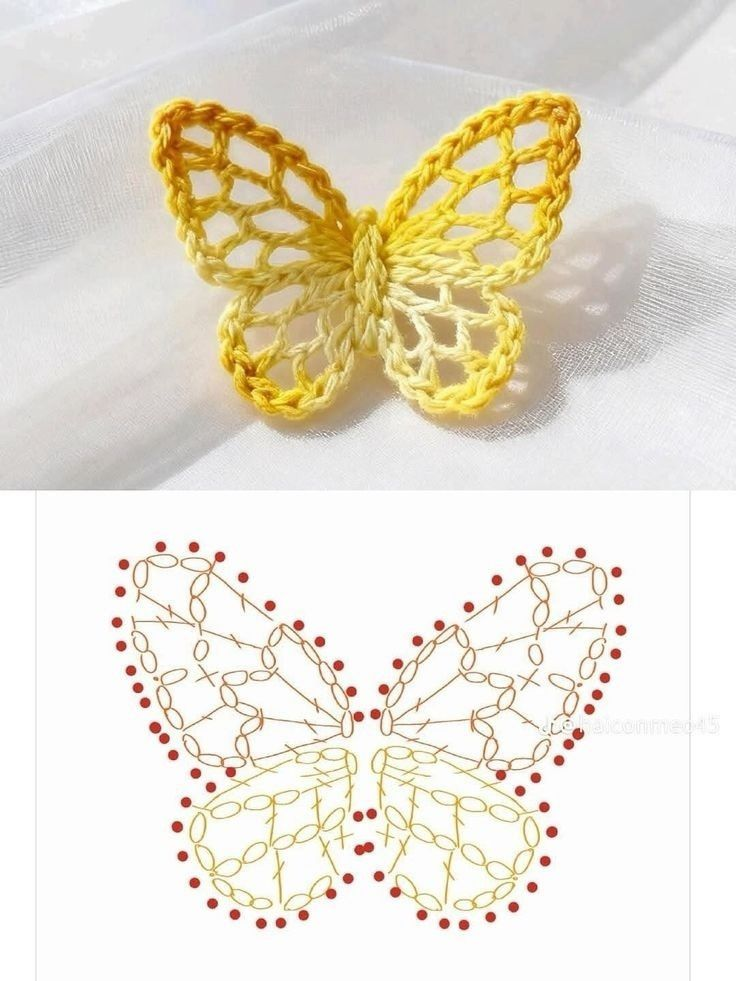
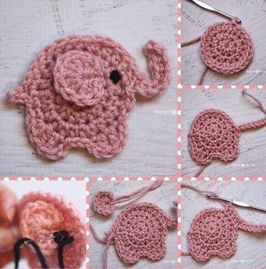
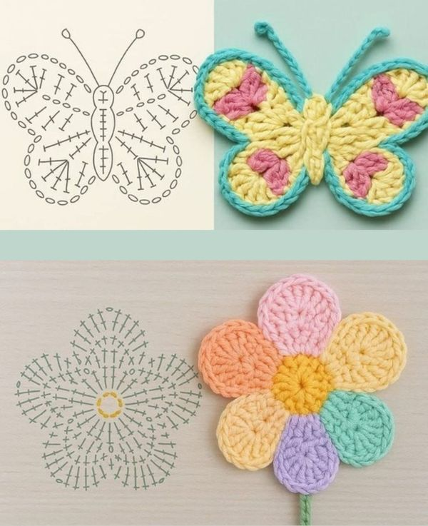

Las mejores lanas
Calidad, suavidad y arte en cada hilo
Ver productos







Fibra ultrafina 18.5 micras
Lana merino seleccionada a mano, suavidad excepcional ideal para prendas de alta calidad.
Disponible
Mezcla de fibras naturales
Combinación única de lana de oveja y alpaca, ideal para proyectos con textura y calidez.
En oferta
Tintes naturales
Teñido con plantas y flores, respetuoso con el medio ambiente. Colores únicos y vibrantes.
Edición limitada
2 ovillos de lana gruesa + agujas N°8 + patrón paso a paso. Ideal para principiantes.
$12.990

2 ovillos de lana fina + agujas circulares + patrón de trenzas.
$9.990

4 ovillos de lana hipoalergénica + patrón de punto bobo + tutorial en video.
$24.990

Ideal para detalles, amigurumis y proyectos pequeños
Desde $2.490

Perfecto para gorros, bufandas y accesorios
Desde $4.990

Ideal para chalecos, mantas pequeñas y suéteres
Desde $11.990

Para proyectos grandes como mantas, cardigans y más
Desde $22.990

Figura decorativa hecha con hilo mediante puntos básicos de crochet, formando alas simétricas y delicadas.

Figura artesanal hecha con hilo utilizando puntos de crochet, que representa un elefante con formas suaves y decorativas, ideal como adorno o amigurum

Diseño circular tejido con varios pétalos de colores, usado como adorno o aplicación textil.

15 cm | Lana hipoalergénica | Ojos de seguridad
$15.990

12 cm | Vestido removible | Perfecto para regalar
$14.990

18 cm | Crin multicolor | Ala glitter
$19.990

20 cm | Alas articuladas | Edición limitada
$24.990
"La calidad de las lanas es increíble, súper suaves y los colores son hermosos. ¡Volveré a comprar!"
"Los kits son perfectos para aprender. El patrón viene muy bien explicado, quedé encantada con mi bufanda."
"El envío fue rápido y los amigurumis son hermosos. Definitivamente mi tienda favorita de lanas."
El crochet es una técnica de tejido con gancho para crear figuras y diseños. Se basa en puntos básicos como la cadena y el punto bajo. Con práctica, se logran trabajos más complejos y creativos.

Aprovecha nuestros descuentos en lotes seleccionados y kits de tejido. ¡Stock limitado!
Recibe novedades, patrones gratis y descuentos exclusivos directamente en tu correo.